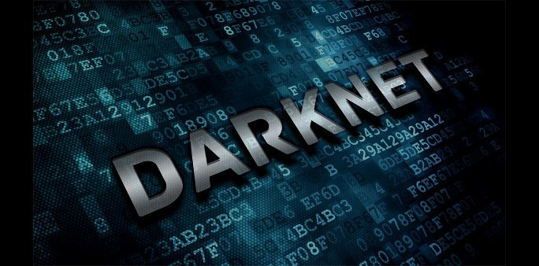

Como acceder a la DarkWeb
Información sobre la Dark Web
Darknet
Es la parte de Internet que no está indexada por los motores de búsqueda convencionales y solo es accesible mediante software especializado como Tor o I2P. |

Anonimato
Los usuarios pueden navegar de manera anónima, protegiendo su identidad y ubicación gracias a la encriptación de múltiples capas.
Actividades
En la dark web se pueden encontrar tanto actividades ilícitas, como mercados de bienes ilegales, como usos legítimos, como foros de activistas, periodistas o disidentes que buscan privacidad.
Pasos para acceder a la Dark Web
- Descargar e instalar Tor Browser, un navegador diseñado específicamente para acceder a la dark web. Está disponible en el sitio oficial de Tor Project.
- Configurar el navegador correctamente. Puedes elegir entre usar una configuración básica o personalizar la configuración de privacidad según tus necesidades.
- Visitar sitios ".onion", que son dominios exclusivos de la dark web. Es importante acceder solo a sitios de confianza y evitar cualquier actividad ilegal.
- Utilizar una VPN para añadir una capa extra de seguridad y anonimato mientras navegas.
- Navegar con precaución, evitando compartir información personal y manteniendo un comportamiento seguro en línea.
Recursos y tipos de sitios
- Mercados Negros: sitios donde se comercializan productos ilegales como armas, drogas o información robada.
- Fórums de Privacidad: comunidades que discuten sobre seguridad en línea,